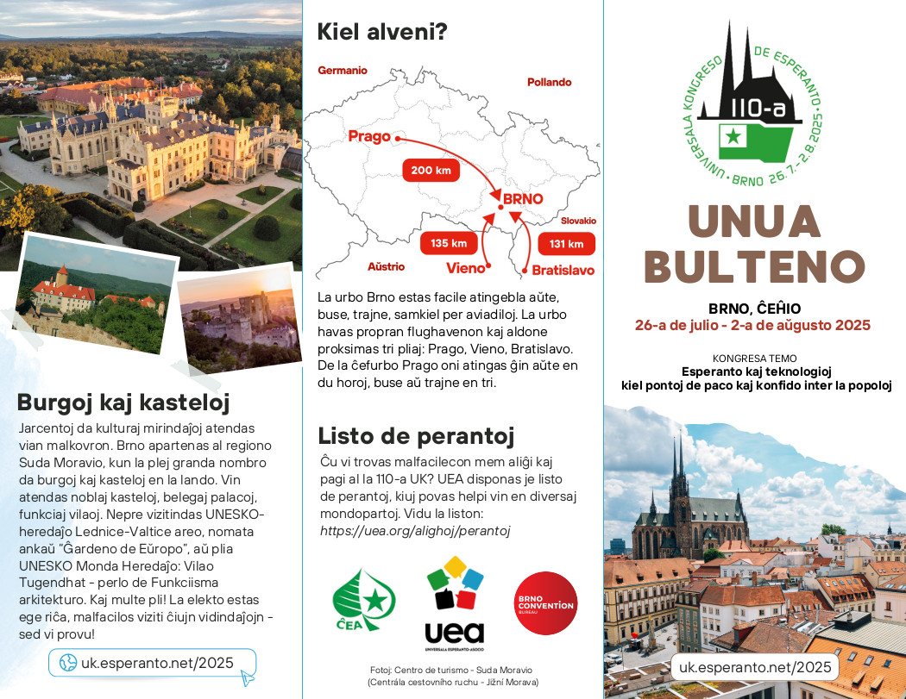
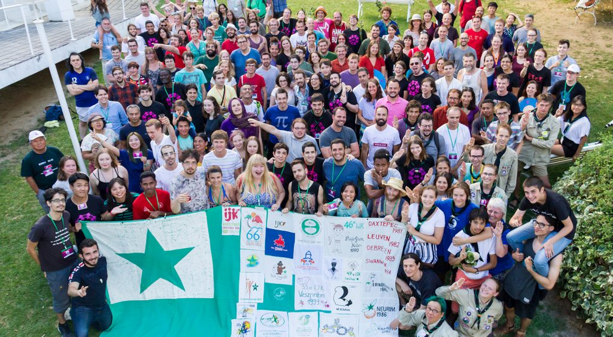
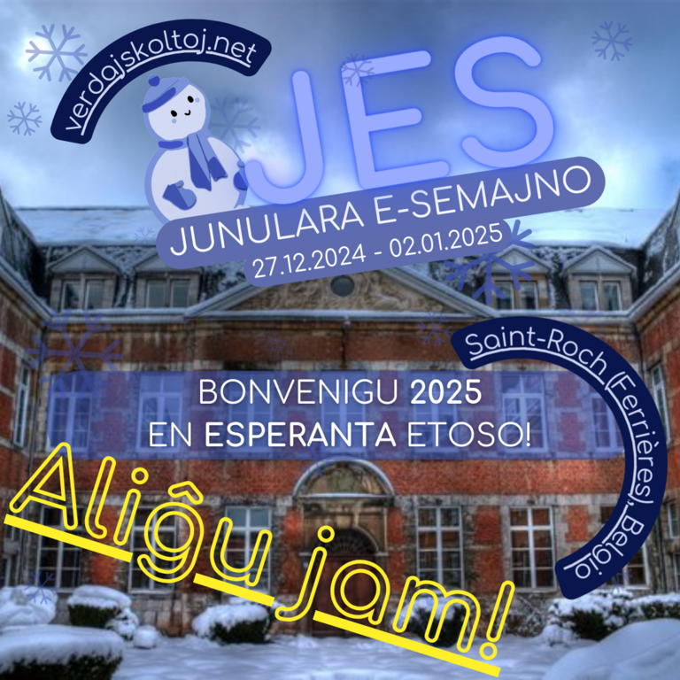

Cada año se realizan numerosos encuentros de esperantohablantes en diferentes temas alrededor del mundo. Movilizan a los esperantohablantes que comparten la misma voluntad sobre un tema específico. El principal ejemplo es el Congreso Universal de Esperanto (Reino Unido), que anualmente organiza la UEA cada verano durante una semana.
Otros eventos:
- SAT-Kongreso, organizado anualmente por Sennacieca Asocio Tutmonda;
- International Youth Congress of Esperanto (IJK), congreso anual oficial de TEJO; 
- Internacia Infana Kongreseto (IIK), arreglo para niños entre 6 y 16 años que ocurren simultáneamente con y cerca del Congreso Universal de Esperanto;
- Somera Esperanto-Studado (SES), la mayor reunión internacional de Esperanto dirigida al aprendizaje de Esperanto.
Además de estos encuentros globales, también hay eventos locales como el Encuentro de Año Nuevo (NR) o la Semana de la Juventud Esperantista (JES), que se llevan a cabo durante los últimos días de diciembre y los primeros días de enero. Estas reuniones parecen haber tenido éxito durante los últimos 20 años.
Debido al hecho de que hay muchas reuniones de Esperanto en todo el mundo, hay dos sitios web cuyo objetivo es enumerarlas y compartirlas. Eventoj.hu los describe con una lista y fechas, y contiene un archivo hasta 1996, mientras que Esperant.io ofrece un mapa mundial con las ubicaciones de los próximos encuentros.